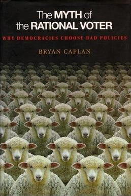

The Myth of the Rational Voter, by Caplan
Tuesday April 5, 2022
Did anyone ever seriously believe voters were rational? Well, Caplan has a 2007 book, and of course the conclusion is that we should be more libertarian. "Rational" means in agreement with economists (meaning Caplan), and by page 197 he advocates "a test of voter competence." As usual, it's not all wrong, but I'm not sure it's all right.

"[T]he superstitions to be feared in the present day are much less religious than political; and of all the forms of idolotry I know none more irrational and ignoble than this blind worship of mere numbers." (epigraph)
"You should not blame the prescription simply because the patient refuses to take his medicine. The Myth of the Rational Voter contains many workable reforms, but due to voter irrationality they are unlikely to be tried." (ix)
At some point, it is part of the task of solving problems to create solutions that work in practice, not only in a hypothetical world imagined by the solver.
"Once economists admit to themselves that voters are just like their students, only worse, they will be poised to unravel the mysteries of politics and policy." (xi)
"The paradox of democracy ... In theory, democracy is a bulwark against socially harmful policies, but in practice it gives them a safe harbor." (page 1)
"Economists and cognitive psychologists usually presume that everyone "processes information" to the best of his ability." (page 2)
"The main difference between the two disciplines is that cognitive psychologists are much more likely than economists to conclude that people's best information processing is not very good." (page 211, note to preceeding)
Thinking the unthinkable: sacred values and taboo cognitions, by Tetlock
"This book has three conjoined themes. The first: Doubts about the rationality of voters are empirically justified. The second: Voter irrationality is precisely what economic theory implies once we adopt introspectively plausible assumptions about human motivation. The third: Voter irrationality is the key to a realistic picture of democracy." (page 3)
Biases: antimarket, antiforeign, make-work, pessimistic (page 10)
"We also note that no replicated study has made rationality violations disappear purely by raising incentives." (page 135, quoting Camerer and Hogarth)
"To get ahead in politics, leaders need a blend of naive populism and realistic cynicism. No wonder the modal politician has a law degree." (page 169)
"Yet a standard debating tactic of creation scientists is to insist that "evolutionary theory, along with its bedfellow, secular humanism, is really a religion."" (page 186; quote is Shermer 2002 page 143)
"Private Choice as an Alternative to Democracy and Dictatorship" (page 192)
"... the Laffer Curve of learning: They retain less if you try to teach them more." (page 200)
Is this as bad an idea as the original Laffer Curve?
"A proverb tells us that "a wise man learns more from a fool than a fool learns from a wise man."" (page 209)